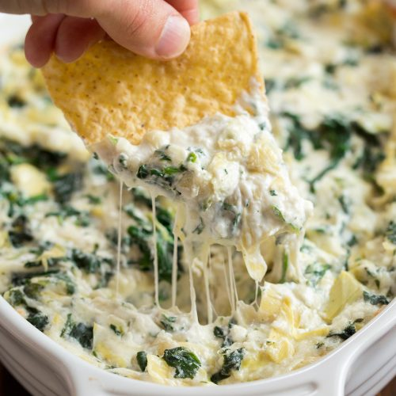
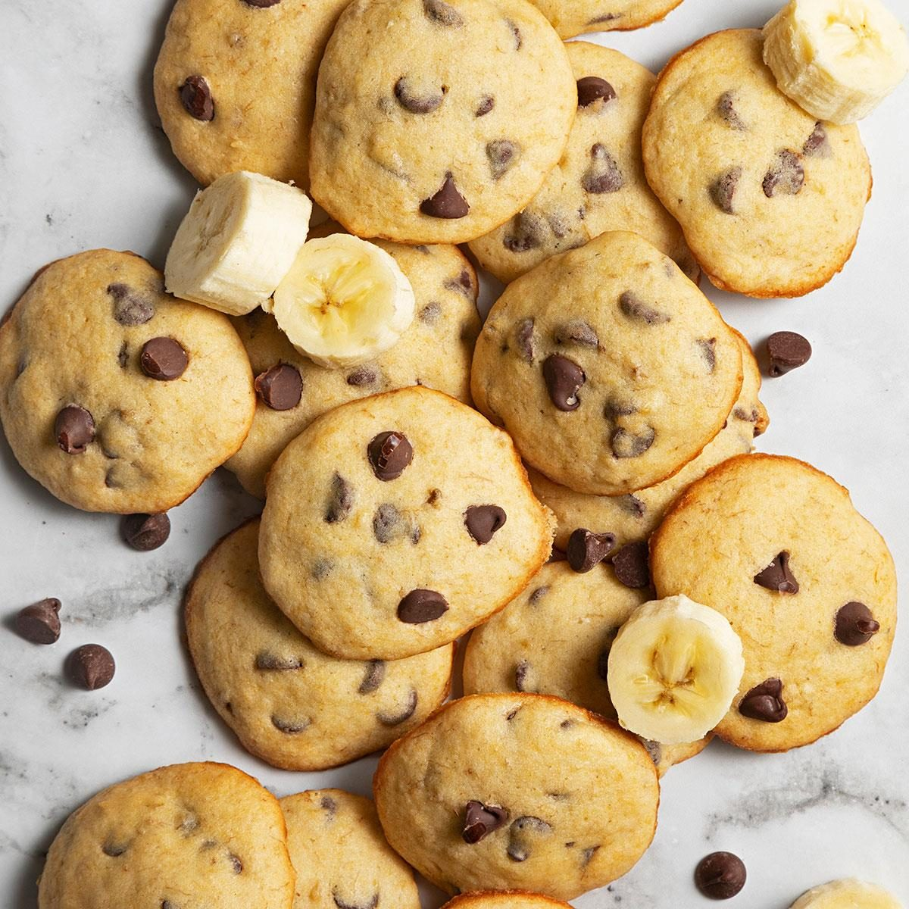

Brea's cookbook
Spinach Artichoke Dip
Total Time Bake
375°F (190°C) for 20-25 min until golden bubbles

- Ingredients: 8 oz cream cheese,
½ cup sour cream,
- ¼ cup mayonnaise,
- 1 cup shredded mozzarella,
- ½ cup Parmesan,
- 1 minced garlic clove,
-
1 can artichoke hearts (drained/chopped),
and 10 oz frozen spinach
- (thawed and squeezed dry).
-
Instructions: Mix all ingredient
(except a handful of mozzarella for the top) in a bowl.
- Spread into a baking dish,
- top with the remaining cheese,
-
and bake at 375°F (190°C) for 20–25 minutes until golden and
bubbling
Directions
-
Thaw and Drain Spinach: Squeeze thawed spinach
to remove all excess water.
-
Preheat Oven:
Preheat to 375°F (190°C) and grease a baking dish.
-
Mix Base: Combine softened cream cheese, sour cream, mayonnaise,
garlic, onion powder, salt, and pepper in a bowl
-
Combine Ingredients: Stir in the drained spinach, parmesan,
and half the mozzarella.
-
Assemble and Bake: Spread into
the dish, top with remaining mozzarella, and bake
for 20–25 minutes
until bubbly.
-
Broil (Optional): Briefly broil
for a golden top,
watching carefully.
- Serve: Let cool before serving with chips or bread.
Dumplings aka.Popstickers
- lb ground beef
- scallions thinly sliced
- cloves garlic, minced
- teaspoon kosher salt
- 1/2 teaspoon ground ginger
- 1/2 teaspoon ground mustard
- 2 Tablespoons soy sauce
- 2 Tablespoons sesame seeds
- 1 Tablespoon rice vinegar
Directions
-
Prepare filling: Combine all ingredients in a bowl and
mix to evenly distribute.
-
Assemble the dumplings: place a small amount (about a teaspoon)
of filling in the center of a dumpling wrapper.
Dip your finger in
water then brush it along the entire edge.
(This will seal the dumpling.)
-
Fold the dumpling in half and press the edges to seal.
If desired, pleat your dumpling: press the center to seal,
then fold back the edges to create pleats on each side.
-
Cook the beef potstickers: Heat a thin coating of oil
in a large frying pan over high heat. (Use a frying pan with a
tight fitting lid.) Add potstickers on the flat side and cook on
high for 2-3 minutes, until the bottom is browned and crispy
-
Turn heat to low. Add about 2/3 cup water around the dumplings
and immediately cover the pan. The steam will cook the top of
the dumplings. Let cook for 5-8 minutes,
until water has cooked out
-
Uncover the pan and cook for another minute or two, just
to get maximum crispness on the bottoms.
-
Assemble the dipping sauce: Place all ingredients
in a small bowl and stir to combine.
-
Serve dumplings immediately, with dipping sauce on the side
Banana Chocolate chip cookies

- ½ cups all-purpose flour
- 2 teaspoons baking powder
- ½ teaspoon salt
- ¼ teaspoon baking soda
- 1 cup white sugar
- ⅔ cup butter, softened
- 1 cup mashed bananas
- 2 eggs
- 1 teaspoon vanilla extract
- 2 cups semisweet chocolate chips>
Directions
-
Prep: Preheat your oven to 350°F (175°C) and line
two large baking sheets with parchment paper.
-
Mix Dry Ingredients: In a medium bowl, whisk together
the flour, baking soda, salt, and cinnamon.
-
Cream Butter and Sugar: In a large bowl, cream
the softened butter and sugars together until
light and fluffy
(about 2-3 minutes). If using melted butter,
simply whisk together
until combined.
-
add Wet Ingredients: Beat in the egg, mashed banana,
and vanilla extract until fully incorporated.
-
Combine: Gradually add the dry ingredients to
the wet ingredients, mixing just until no
streaks of flour remain.
Do not overmix.
-
Fold: Gently fold in the chocolate chips with a spatula.
-
Chill (Recommended): Cover the bowl and
refrigerate the dough
for at least 30 minutes to 1 hour.
This prevents excessive spreading.
-
Scoop: Scoop rounded tablespoons of dough
(about 1.5-2 tbsp each) onto the prepared baking sheets,
spacing them 2 inches apart.
-
Bake: Bake for 10-14 minutes, or until
the edges are golden brown
and the centers are still slightly soft.
-
Cool: Let the cookies cool on the baking sheet
for 5 minutes before transferring
to a wire rack to cool completely.